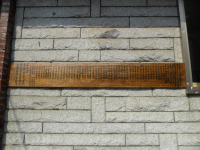

사용자:18정진진
목차
소개
안녕하세요, 저는 18정진진입니다.
정보
- 이름: 정진진
- 학번: 18학번
- 소속: 경희대학교 국어국눔학과
- 참여한 수업:고전문학과 디지털인문학
함깨하는 분들: 안혜지
상세정보
장면
{kind=link}
| 디지털인문학(Digital Humanities) | ||
| -고전문학과 디지털인문학 |
장소
재생
관계도 그래프
#Project h1 정진진 관계도 #Class 사람 음식 #Relation likes 좋아함 inverse 2 made_by 만듣임 arrow 2 #Nodes 001 사람 정진진 002 사람 아빠 003 사람 할머니 004 사람 엄마 005 음식 김치찌개 006 음식 파스타 007 음식 도까스 #Links 001 005 likes 001 006 likes 001 007 likes 005 002 made_by 006 003 made_by 007 004 made_by #End
네트워크 그래프 결과물
담양 소쇄원
1) 라벨 목록 제목 / 속성 / 문화유산건조물 / 문화유산기록물 / 인물 / 장소 / 연대 / 개념 / 유래
2) 관계 목록 위치(연대, 장소와 연결 시) / 설명(속성과 연결 시) / 관련(개념과 연결 시)
3) 명령어
CREATE (:제목 {name: '담양 소쇄원'}),
CREATE (:class {name: '문화유산'}),
CREATE (:class {name: '지정문화재'}),
CREATE (:class {name: '潭陽 瀟灑園'}),
CREATE (:class {name: '명승'}),
CREATE (:시간 {name: '영조 31년'}),
CREATE (:공간 {name: '전라남도 담양군 남면 지곡리'}),
CREATE (:인물 {name: '양산보'}),
CREATE (:인물 {name: '조광조'}),
CREATE (:인물 {name: '양택지'}),
CREATE (:기록물 {name: '소쇄원도'}),
CREATE (:건조물 {name: '제월당'}),
CREATE (:건조물 {name: '광풍각'}),
CREATE (:건조물 {name: '오곡문'}),
CREATE (:해설 {name: '001', story: '담양 소쇄원은 전라남도 담양군 남면 지곡리에 위치'}),
CREATE (:해설 {name: '002', story: '담양 소쇄원은 양산보가 만듦'}),
CREATE (:해설 {name: '003', story: '양산보는 조광조의 제자임'}),
CREATE (:해설 {name: '004', story: '담양 소쇄원은 광풍각과 제월당과 오곡문을 포함함'}),
CREATE (:해설 {name: '005', story: '담양 소쇄원은 소쇄원도를 포함함'}),
CREATE (:해설 {name: '006', story: '소쇄원도는 담양 소쇄원을 묘사함'}),
CREATE (:해설 {name: '007', story: '소쇄원도는 영조 31년에 제작됨'}),
CREATE (:해설 {name: '008', story: '양택지는 양산보의 후손임'}),
CREATE (:해설 {name: '009', story: '양택지는 담양 소쇄원을 중건함'}),
Match(p:제목 {name:'담양 소쇄원'})
Match(a:해설 {name:'001'})
Match(b:해설 {name:'002'})
Match(c:해설 {name:'003'})
Match(d:해설 {name:'004'})
Match(e:해설 {name:'005'})
Match(f:해설 {name:'006'})
Match(g:해설 {name:'007'})
Match(h:해설 {name:'008'})
Match(i:해설 {name:'009'})
Create (p)-[:순서]->(a)-[:순서]->(b)-[:순서]->(c)-[:순서]->(d)-[:순서]->(e)-[:순서]->(f)-[:순서]->(g)-[:순서]->(h)-[:순서]->(i)
Match(a:제목 {name: '담양 소쇄원'})
Match(b:class {name: '문화유산'})
Match(c:class {name: '지정문화재'})
Create (b)<-[:포함]-(a)-[:포함]->(c)
Match(a:제목 {name: '담양 소쇄원'})
Match(b:class {name: '문화유산'})
Match(c:class {name: '지정문화재'})
Create (c)-[:소속]->(b)
Match(a:제목 {name: '담양 소쇄원'})
Match(b:class {name: '潭陽 瀟灑園'})
Match(c:class {name: '명승'})
Create (b)-[:지향]->(a)<-[:지향]-(c)
Match(a:제목 {name: '담양 소쇄원'})
Match(b:시간 {name: '영조 31년'})
Match(c:공간 {name: '전라남도 담양군 남면 지곡리'})
Create (b)-[:위치]->(a)<-[:위치]-(c)
Match(a:시간 {name:'영조 31년'})
Match(b:해설 {name:'007'})
Create (b)-[:관련]->(a)
Match(a:공간 {name:'전라남도 담양군 남면 지곡리'})
Match(b:해설 {name:'001'})
Create (b)-[:관련]->(a)
Match(a:인물 {name:'양산보'})
Match(b:해설 {name:'002'})
Match(c:해설 {name:'003'})
Create (b)-[:관련]->(a)<-[:관련]-(c)
Match(a:인물 {name:'양산보'})
Match(b:해설 {name:'008'})
Create (b)-[:관련]->(a)
Match(a:인물 {name:'조광조'})
Match(b:해설 {name:'003'})
Create (b)-[:관련]->(a)
Match(a:인물 {name:'양택지'})
Match(b:해설 {name:'008'})
Match(c:해설 {name:'009'})
Create (b)-[:관련]->(a)<-[:관련]-(c)
Match(a:기록물 {name:'소쇄원도'})
Match(b:해설 {name:'006'})
Match(c:해설 {name:'007'})
Create (b)-[:관련]->(a)<-[:관련]-(c)
Match(a:건조물 {name:'제월당'})
Match(b:해설 {name:'004'})
Create (b)-[:관련]->(a)
Match(a:건조물 {name:'광풍각'})
Match(b:해설 {name:'004'})
Create (b)-[:관련]->(a)
Match(a:건조물 {name:'오곡문'})
Match(b:해설 {name:'004'})
Create (b)-[:관련]->(a)
Match(a:제목 {name:'담양 소쇄원'})
Match(b:해설 {name:'001'})
Match(c:해설 {name:'002'})
Create (b)-[:관련]->(a)<-[:관련]-(c)
Match(a:제목 {name:'담양 소쇄원'})
Match(b:해설 {name:'004'})
Match(c:해설 {name:'005'})
Create (b)-[:관련]->(a)<-[:관련]-(c)
Match(a:제 {name:'담양 소쇄원'})
Match(b:해설 {name:'006'})
Create (b)-[:관련]->(a)
Match(a:해설 {name:'004'})
Match(b:건조물 {name:'광풍각'})
Match(c:건조물 {name:'제월당'})
Create (b)-[:관련]->(a)<-[:관련]-(c)
Match(a:해설 {name:'004'})
Match(b:건조물 {name:'오곡당'})
Create (b)-[:관련]->(a)
담양 소쇄원 Neo4j 결과물
두리봉과 성황당
텍스트분석
도봉구개요
지금의 도봉구 도봉 1동 15통 1호에서 10호까지의 자리에 성황당이 있었고, 의정부 쪽으로 가면 오른쪽 주택가 뒤에 두리봉이 위치하고 있었다. 당시 왕궁을 지키는 수비는 철통 같았지만 국경을 지키는 그렇지 못했다. 그래서 외국에 의한 납치 등이 빈번했다.
전설
미인이 많은 「무수마을」에 전족 전통이 있는 중국의 여자 도적단 출몰 2020년 기준 중국의 남녀 성비는 여성 100명당 남자 113.5명으로 남녀성비의 불균형이 심각하다. 조선왕조가 존재하던 시절의 중국에서도 남자들에 비해서 여자들이 귀해서 조선 여인들을 납치하는 사람들이 있었다. 그 당시 중국에서 법률적으로 여아를 낳으면 시집을 간 후 도망치지 못하도록 전족(纏足)은 어린 여자아이나 여인의 발을 인위적인 방법으로 묶어 성장을 방해 하는 전통 풍속으로 중국 미인의 필수요소 중 하나였고, 이 풍습은 10세기 초부터 20세기까지 약 1,000년 간 지속되었다. 중국에서 3∼6세에 여자아이는 가로 10cm, 세로 2∼2.5m의 헝겊을 발에 동여매고 엄지발가락 이외의 발가락을 발바닥 방향으로 접어넣듯 묶어 조그만 신에 고정시켰다. 발뒤꿈치에서 발끝까지 약 10cm가 이상적이라고 하며, 그 상태로 성장한 여자의 발은 심하게 변형되었다고 한다. 전족을 하면 발끝으로 종종거리며 걸어야 하였다. 이런 전통이 있어 여자가 남존여비가 심한 사회였다.
성황당의 유래
당시의 양주군 노해면 무수리 ‘근심이 없는 동네’ 무수마을 주민들은 도봉산 정기를 받은 미남, 미녀로 소문이 자자하였다. 이 소문이 중국에까지 퍼지자 중국의 여자 납치 세력은 이왕 여자를 도둑질 하는 겸 미녀들이 사는 무수마을을 거사지로 삼아서 1년에 한 두번씩 여자가 납치당했다. 마을사람들이 두리두리 찾아봐도 사라진 여인들은 다시는 돌아오지 못했다. 그래서 산의 명칭이 두리산으로 결정되었으며 마을사람들은 여자들이 납치당하는 것을 미연에 방지하기 위해 성황당이라는 초소 역할을 담당할 수 있는 곳을 조성하여 행인들로 하여금 돌 세 개를 놓고 절을 세번 실시할 수 있도록 하였다. 성황당은 수백년이 지나면서 아름드리 소나무, 참나무가 많이 자라나 휴식처가 되었다. 이 곳은 일본인도 지나가며 절을 하곤 했다고 한다. 하지만 이 성황당은 한국전쟁 발발시에 중국군이 이동하고 있을 때 이들이 미군 폭격기에 발각되어 산산조각 나버려 현재는 흔적도 찾아볼 수 없다. 하지만 도봉 1동 사무소 소재 주민들은 아직까지도 이 곳을 성황당(서낭당이라고도 함. 성황당은 한자어) 이라고 부르고 있다.
테마
서울에서 시골 정취를 느낄 수 있는 두리봉과 성황당 터 관광
옛 무수마을 사람들의 이야기를 되새기며 여행
두리봉과 성황당 계획안
성황당 터 뒤산
서낭당 무수울의 별칭이다. 이는 서울 도봉동 599-3번지 무수울 앞쪽 대로변 마을 어귀에 서낭당이 존재했다.서낭당이 있었던 마을이라고 하여 서낭당마을이 조성되었다. 서낭당 자리 도봉구 도봉동 599-3번지(도봉로169나길78, 행정서사 송삼준사무소 자리)에 성황당이 자리했었고 부근 무수골 어귀에 무당집(도봉로 169다길 3, 영남카서비스 자리)이 위치했었다. 전설 이야기를 통해 관광객을 유치할 수 있는 가능성이 있어 관광 코스로의 개발이 진행된다면 더욱 많은 유동인구 유입이 있을 것으로 생각된다.
방문 코스
{kind=link}
오색천을 묶은 아람드리 소나무신목과 신목주위에 소나무가 여러그루 있었는데 이런 성황당에서 소원을 빌곤 했는데 1970년대 새마을운동을 하면서 1977년경 미신이라고 제거해버려 지금은 지명만 남아있고 흔적조차 없는 것이 현실이나 앞서 서술한 이야기를 보고 지명에 의미를 생각하면서 탐방해보는 것도 가능하다고 사료된다.
{kind=link}
영남카서비스 자리에 무수리동리중계, 도봉무수향우회 (구 도당터, 구 보살선녀암)이란 현판을 단 무당집 (도봉로169 다길)이 존재한다. 서울에 위치하고 있음에도 불구하고 비교적 개발이 더딘 편이라 시골 정취를 느끼며 역사적 시련과 난해한 문제에 대한 사고를 하면서 옛 무수마을 터를 돌아보는 것도 관광적 측면에서 충분히 가능하리라고 본다.

{kind=link}
주석
- ↑ 자연현상